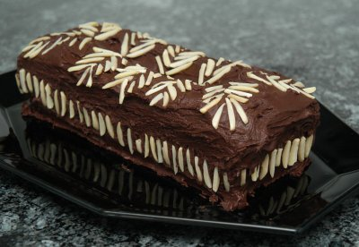
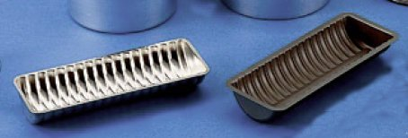
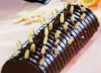
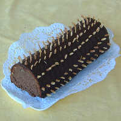

| Zutaten: | |
| 125 g | Butter oder Margarine |
| 125 g | Zucker |
| 1 Pack | Vanillezucker |
| 3 | Eier |
| 100 g | Mehl |
| 1 EL | Stärkemehl |
| 2 TL | Backpulver |
| 100 g | Schokolade, gerieben |
| 75 g | Mandlen gerieben |
| 200 g | Kochschokolade |
| 75 g | Mandelstifte |
| 3 EL | Milch |
| haselnussgrosse Butter | |
Butter, Zucker und Vanillezucker zu einer schaumigen Masse rühren. Nach und nach die Eier hinzufügen. Mehl, Stärkemehl und Backpulver miteinander vermischen. Zusammen mit der geriebenen Schokolade und den Mandeln unter den Teig rühren. Diesen in die gut ausgefettete Rehrückenform geben und glatt streichen. Im vorgeheizten Backofen (180°C) ca. 40 Minuten backen. Den Kuchen nach dem Auskühlen auf dem Kuchengitter mit dem heissen Schokoladenüberzug* überziehen und gleichmässig mit den Mandelstiften bestecken.
Rehrücken gehört zu den feinen Rührkuchen, da der Teig besonders locker und zart ist.
Tipp: Schokolade lässt sich einfacher reiben oder raspeln, wenn man sie zuvor in das Gefrierfach legt. Sie schmilzt - und schmiert dann nicht so schnell. Kuchenteige, die Schokolade enthalten, sollten nicht zu dunkel gebacken werden, da die Schokolade sonst leicht bitter im Geschmack wird.
* Der Schokoladenüberzug glänzt, wenn Sie in einem Pfännchen erst haselnussgrosse Butter zergehen lassen und der Kochschokolade (Stückchen schmelzen schneller) 2 bis 3 EL Milch hinzufügen. Gut umrühren und heiss (aber nicht kochen lassen!) den Rehrücken damit überziehen.
Herbert Eigenmann, Code: RER
Hat am 3.8.2007 sehr gut geschmeckt. Ich habe nicht ganz begriffen was eine Rehrückenform und "bestecken" heisst. Eigentlich wäre das eine gewölbte Backform mit Querrillen. Und die Mandelstifte wären eingesteckt. RE.
Hier ein paar Bilder vom Internet die zeigen wie es aussehen sollte:


